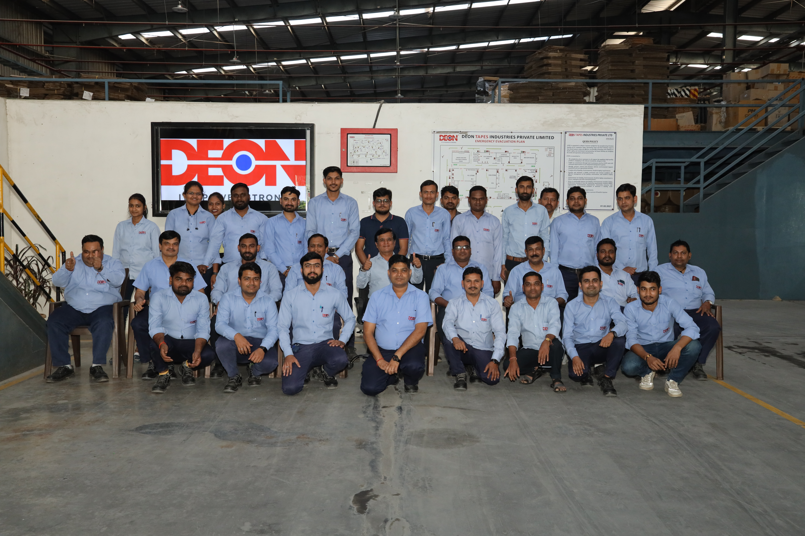
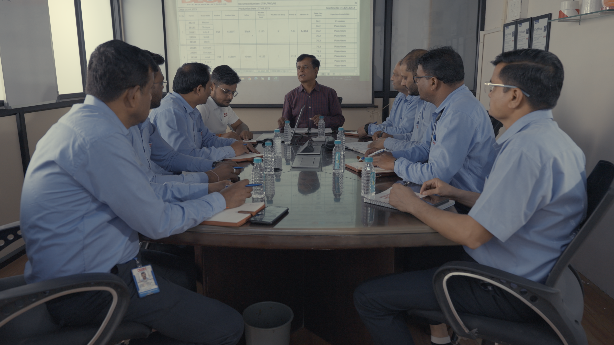
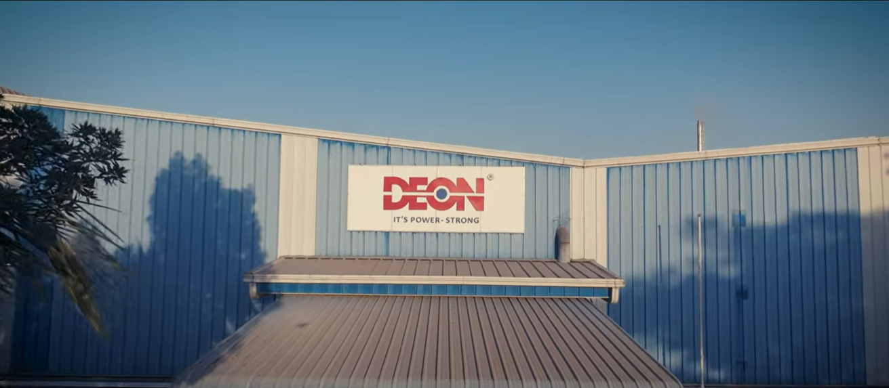
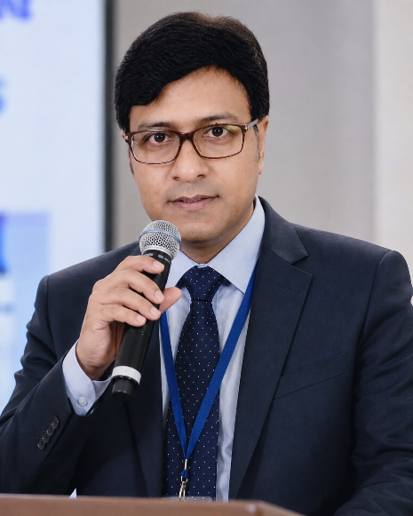

India's premier provider of superior tape solutions — driven by innovation, quality, and customer satisfaction since 2016.
DEON manufactures pressure-sensitive adhesive tapes and soft PVC films for customers across India and international markets. Every step — adhesive formulation, coating, converting, quality control and product development — is controlled in-house at our plants in Silvassa and Vadodara.
Established in 2017, we began manufacturing PVC products such as Electrical Insulation, Floor Marking and Wire Harness Tapes with a capacity of 17M sqm/month. Since then we have expanded significantly — adding Masking Tapes, BOPP coating lines, High-speed PVC coating lines, Specialty Tapes coating lines and Hot Melt coating lines, growing our capacity to over 51M sqm/month.
Today we produce a wide range of self-adhesive tapes including Aluminium Foil, Double-Sided Polyester, Double-Sided Tissue, HDPE Fabric Tape and industrial tapes with hot-melt, solvent, acrylic and rubber-based adhesives.

Our mission is to be India's premier provider of superior tape solutions, driven by innovation, quality, and customer satisfaction. We aim to enhance efficiency and reliability across industries, fostering growth and sustainability through excellence in manufacturing and service.

As pioneers in the tape manufacturing industry in India, our vision is to revolutionize adhesive solutions, setting new standards of excellence and reliability. By leveraging innovation and collaboration, we aim to be the driving force behind seamless operations and sustainable practices across diverse sectors.

Integrity is the foundation of our business. We conduct ourselves with honesty, transparency, and ethical behaviour in all interactions, both internally and externally. Trust and integrity are fundamental to our relationships with customers, suppliers, and employees.
We embrace innovation as a driving force behind our success. Continuously seeking new technologies, materials, and processes, we strive to push boundaries and stay ahead of industry trends, delivering innovative tape solutions that meet evolving customer needs.
We are dedicated to upholding the highest standards of quality in every aspect of our operations. From sourcing raw materials to manufacturing processes and final product delivery, we prioritise excellence to ensure our tapes meet or exceed customer expectations.
We are committed to minimising our environmental footprint and promoting sustainable practices throughout our operations. From eco-friendly materials and manufacturing processes to waste reduction and recycling initiatives, we strive to be responsible stewards of the planet while delivering superior tape products.
Our customers are at the heart of everything we do. We listen attentively to their needs, anticipate their challenges, and work tirelessly to provide tailored tape solutions that add value and exceed expectations. Customer satisfaction is our ultimate priority.

Mr. Vikram Jain is an industry pioneer who brings a unique blend of strategic foresight and dynamic leadership to DEON. With over 21 years of experience, his robust professional background spans two highly demanding sectors: container manufacturing and finance companies.
In the container manufacturing sector, he mastered industrial production lines, structural engineering standards, and heavy-duty supply chains. This hands-on expertise gives DEON a powerful edge in scaled manufacturing precision and robust product development.
Complementing this operational strength is his deep experience within finance companies. This background instilled a sharp acumen for asset management, corporate governance, fiscal discipline, and strategic investment.
At DEON, Mr. Vikram Jain successfully bridges these two worlds. He infuses our corporate strategy with manufacturing excellence and rigorous financial oversight, serves as an active member of various premier organisations, and constantly drives the group to new heights.
Since 2016, Mr. Jignesh Doshi has been a cornerstone of our organisation, driving company growth from its early foundational stages through his exceptional leadership and strategic guidance. His endless energy and steadfast dedication have been instrumental in shaping the company's trajectory, transforming our operational capabilities and establishing a resilient corporate framework.
With a rich professional background rooted in the steel industry and global import-export trade, Mr. Doshi brings a wealth of industrial insight to the executive team. His deep expertise in navigating complex international markets and managing heavy industrial supply chains has allowed the company to successfully scale operations and effectively manage resource allocation.
By seamlessly merging his trading acumen with a passion for manufacturing, he continues to guide the company through shifting market dynamics. His visionary leadership and long-term commitment remain vital forces in expanding our market presence and positioning the company for enduring excellence.
Talk to our team about your application, or explore careers.